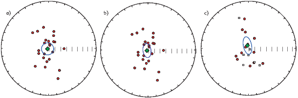

BACKGROUND: read Efron and Tibshirani (1993); Tauxe et al. (1991).
Paleomagnetists have depended since the 1950’s on the special statistical
framework developed by Fisher (1953) for the analysis of unit vector data. The
power and flexibility of a variety of tools based on Fisher statistics enables
quantification of parameters such as the degree of rotation of a crustal block,
or whether the geomagnetic field really averages to a geocentric axial
dipole independent of polarity. These tools, however, require that the
paleomagnetic data belong to a particular parametric distribution – the Fisher
distribution.
In many important situations, the Fisher distribution fails to represent
paleomagnetic data adequately. To begin with, the geomagnetic field itself can
produce directions that are far from Fisher distributed. Most statistical
paleosecular variation models generate spherically symmetric distributions of the
VGPs (see, e.g., Figure 12.1a). When converted to equivalent directions, they are
more elongate as the observation site approaches the equator (see Figure 12.1b).
Because VGPs that are farther from the pole are associated with weaker field
strengths in collections of paleomagnetic data and in many models of the field,
the Fisher assumption of unit vector length over-emphasizes the importance of
the “outliers” and leads to mean inclinations that are shallower than the
true mean (see e.g., Creer, 1983). Another example of the inadequacy
of the Fisher distribution is the fact that the magnetic field exists in
two stable polarity states. Because the Fisher distribution allows only
uni-modal data, bi-polar data must be separated into separate modes or one
mode must be “flipped” to the antipode prior to calculating a mean.
Remanence vectors composed of several components tend to form streaked
distributions. Structural complications (e.g., folding) can lead to streaked
distributions of directional data. And, inclination error arising from flattening of
directions tends to form “squashed” directional distributions that are
wider in the horizontal plane than in the vertical. These are all commonly
observed pathologies in directional data sets that lead to non-Fisherian data
distributions.
Thus, non-Fisherian data are a fact of paleomagnetic life. The Fisher-based tests
can frequently be inappropriate and could result in flawed interpretations. In
Chapter 11 we learned the basics of Fisher statistics and how to test data sets
against a Fisher distribution. In this chapter, we will discuss what to do when
Fisher statistics fail. We will begin with parametric approaches that
treat certain types of non-fisherian data. We then turn to the use of
non-parametric methods such as the bootstrap and jackknife in paleomagnetic
applications.
Many paleomagnetic data sets have a more elliptical distribution than the
symmetrical distribution required for a Fisherian data set. To treat such data, it
is probably inappropriate to use a Fisher cone of confidence and a distribution
that allows data with elliptical directional dispersion would be better. The
elliptical analogue of the Fisher distribution is the Kent distribution (Kent, 1982)
and is given by:
 | (12.1) |
The mean direction in a Kent distribution is estimated in the same way as for
the Fisher distribution (see Chapter 11). The difference is that when
transformed to the mean direction, Kent declinations are not uniformly
distributed around the mean. If we calculate eigenparameters for the
orientation matrix of the data (see Appendix A.3.5), then the major
and minor eigenvectors (V2,V3) lie in a plane orthogonal to the mean
direction along the axis with the most and least scatter respectively. In
Equation 12.1 α is the angle between a given direction and the true mean
direction, and ϕ is the angle in the V2,V3 plane with ϕ = 0 parallel
to V2. κ is a concentration parameter similar to the Fisher κ and β is
the “ovalness” parameter. c(κ,β) is a complicated function of κ and β.
When β is zero, the Kent distribution reduces to a Fisher distribution.
Details of the calculation of Kent 95% confidence ellipse are given in
Appendix C.2.4.
If we were to collect data from the equatorial region, we might well obtain a set
of directions such as those shown in Figure 12.2a. [Note that the center of the
diagram is the expected direction – not down as is more common.] The Fisher
α95 circle of confidence for this data set is shown in Figure 12.2a. The
Kent ellipse (Figure 12.2b) clearly represents the the distribution of data
better than the Fisher α95, being elongate in the same sense as the data
themselves.
The Kent distribution has the advantage that it can deal with elliptical data sets
while the Fisher distribution cannot. However, many paleomagnetic data sets are
also bi-modal (reversals!) and the Kent and Fisher distributions can only deal
with data sets with a single polarity. It was precisely for the purpose of treating
bimodal, elliptical data that the Bingham distribution was developed (Bingham,
1974). The Bingham distribution is given by:

where α and ϕ are as in the Kent distribution, k1,k2 are concentration
parameters (k1 < k2 < 0) and d(k1,k2) is a constant of normalization. Values for
k1,k2 can be estimated by numerical integration and can be converted into 95%
confidence ellipses, the details of which are given in Appendix C.2.5. In a nut
shell, the V1 eigenvector of the orientation matrix (associated with the
largest eigenvalue, see Appendix A.3.5) is the principal direction and the
semi-axes of the 95% confidence ellipse are proportional to the intermediate
and minimum eigenvalues. The Bingham principal direction therefore is
not necessarily the same as the Fisher or Kent mean. If we take each
vector end-point to be a mass, the Bingham principal direction is the
axis about which the moment of inertia of the masses would be least.
The Fisher mean is somewhat different, in that it is the vector sum of
unit vectors. The Bingham mean (principal direction) is less affected by
outliers than the Fisher mean, lying closer to the center of mass of data
points.
The principle drawback of the Bingham distribution is that because the
orientation matrix uses the entire data set (normal and reverse) the two modes
are assumed to be antipodal and to share the same distribution parameters.
The question of whether normal and reverse data sets are antipodal and
have the same dispersion is in fact one we may wish to ask! One could
separate the two modes prior to calculation of the Bingham ellipse, but
then the rationale for using the Bingham distribution is lost. Also, many
published descriptions of the Bingham calculation (e.g., Onstott et al. 1980,
Borradaile, 2003) have errors in them. The source code for calculating
Bingham statistics in widely used paleomagnetic data reduction programs is
generally not available, and it is unknown whether these programs contain
bugs.
Estimating the parameters for the Bingham ellipse exactly is computationally
taxing and all of the available “canned” programs use the look up table of
Mardia and Zemroch (1977; see Appendix C.2.5). LeGoff et al. (1992) suggested
some approximations which may be valid for concentrated distributions. They
also introduced the concept of weighting results according to some reliability
criteria. For the general case, however, it seems preferable to use the exact Kent
(1982) ellipses on uni-modal data sets. These could of course be weighted if such
weighting is desired.
Until now we have continued the Fisher assumption of unit vectors. As
already mentioned, neglect of the vector strength can lead to bias. Love
and Constable (2003) began the hard work of incorporating intensity
information into the parameter estimation problem. Their method can handle
bi-modal spherical Gaussian data such as those shown in Figure 12.3.
Estimation of the Love parameters are beyond the scope of this book.
Moreover, many data sets are not spherically symmetric as already noted
and the Love and Constable (2003) approach must be generalized to
elliptical, more “blade-like” data sets than the “cotton balls” currently
treatable.
As we have mentioned, real data may be pathological in several respects
including bi-modal and elliptically distributed data. None of the methods we
have described so far have the test for common mean so critical to paleomagnetic
studies nor can they provide confidence ellipses for an off-center mean direction
as is likely to occur in records of the geomagnetic field (see Figure 12.1b).
Finally, data may be overprinted or contain the record of a paleomagnetic
transition, resulting in “streaked” or non-antipodal distributions, conditions that
make the conventional methods inappropriate. In this section we will discuss
alternative methods for estimating confidence bounds which are sufficiently
flexible to accomodate all of these short comings, provided the data set is large
enough.
In Figure 12.4a we show a not unusual “not great” paleomagnetic data set. The
data are elliptical, bi-modal and one has the suspicion that the normal and
reverse modes may be neither antipodal nor share the same concentration or
ovalness parameters. Clearly some non-parametric approach would be desirable.
The approach for characterizing uncertainties for vectors we will take here is
based on a technique known as the statistical bootstrap. As we shall see, the
bootstrap has the flexibility to allow us to treat awkward data sets like that
shown in Figure 12.4a.
The principles of the bootstrap are given in Appendix A.3.7. In essence, the
parameter of interest (say, the mean vector) is calculated from many resampled
data sets, whose data points are selected at random from the original data. The
bootstrapped estimates “map out” the likely distribution of the parameter,
allowing estimation of confidence regions. Before we extend the bootstrap from
the scalar treatment in Appendix A.3.7 to vectors, it is important to point out
that with the bootstrap, it is assumed that the underlying distribution is
represented by the data, demanding that the data sets be rather large. Moreover,
the bootstrap estimates are only asymptotically valid, meaning that a
large number of bootstrap calculations are required for the confidence
intervals to be valid. It’s a good thing we have fast computers with huge
hard-drives.
There are a variety of ways we can use the bootstrap to estimate confidence
regions for paleomagnetic data. We will start with the most “Fisher” like
approach of taking unit vectors of a single polarity. Then we will accommodate
dual polarity data sets and develop analogous tests to those so useful for Fisher
distributions.
To do a simple bootstrap on a data set with only one polarity (say the normal
data in Figure 12.4a, we first randomly draw N data points from the data shown
in Figure 12.4a. Each set of N data points is a pseudo-sample. Note that some
data points will be drawn more than once while others will not be drawn at all
in a particular pseudo-sample. We then calculate a Fisher mean of the
pseudo-sample (one little circle in Figure 12.4b. This resampling procedure
can be repeated many times. We show 500 such bootstrapped means in
Figure 12.4b.
Now we can estimate the region of 95% confidence for the bootstrapped means. A
non-parametric approach would be to draw a contour enclosing 95% of the
bootstrapped means. In many applications, paleomagnetists desire a more
compact way of expressing confidence regions (for example, to list them in a
table) and this necessitates some parametric assumptions about the distribution
of the means. For this limited purpose, approximate 95% confidence regions can
be estimated by noting the elliptical distribution of the bootstrapped means and
by assuming that they are Kent (1982) distributed. Such bootstrap confidence
ellipses are shown in Figure 12.4c.
When paleomagnetic data are bimodal, as in Figure 12.4a, we can proceed in one
of two ways. We could just calculate the principal eigenvector of the orientation
matrix (V1) as in Bingham statistics of each bootstrapped pseudo-sample or we
can separate the data into two modes and calculate Fisher means for each mode
separately (as in Figure 12.4b).
To separate the data into normal and reverse subsets, we first calculate the
principle direction of the whole dataset. This will be more or less parallel to the
Fisher mean of one of the modes. Any direction more than 90∘ away from this
could be placed in the second mode. After separation, Fisher means of the
bootstrapped pseudo-samples can be calculated for each mode separately.
Alternatively, if a more robust estimate of the “average” direction is desired, one
could calculate the principal eigenvector V1 of each mode, which is less sensitive
to the presence of outliers.
The bootstrap just described is a “simple” or “naïve” bootstrap in that no
distribution is assumed for the data. We did assume, however, that all the
uncertainty inherent in the data is reflected in the data distribution. If the data
set is smaller than about N = 20, this leads to uncertainty ellipses that are too
small (Tauxe et al., 1991). Many paleomagnetic data sets are smaller than this,
yet they are demonstrably non-Fisherian. Luckily, if we are able to assume some
parametric form for data from e.g., a given site, we can use a superior
technique which is known as the parametric bootstrap. As applied here, we
assume that each site with N samples is Fisher distributed (in principle, a
testable assumption). Then, after random selection of a particular site for
inclusion in the pseudo-sample, we draw N new directions from a Fisher
distribution with the same mean direction, κ and N. From these simulated
data sets, we calculate a substitute mean direction, and use that in the
pseudo-sample. Otherwise, we follow the same procedure as in the simple
bootstrap.
For large data sets (N > 25), the parametric and simple bootstraps yield very
similar confidence ellipses. For smaller data sets, the parametric ellipses are
larger, and are probably more realistic.
The test for a common mean addresses the question “can the means of two data
sets be discriminated from one another?” Another way of putting it is, “If a set
of bootstrap means is examined, are there two distinct groups or is there just
one?” We explore these ideas by considering the same Fisherian data sets we
used in Chapter 11 for the Watson’s V w test. In Figure 12.5 we show two data
sets (triangles and circles), each drawn from distributions with a κ of
20. The mean direction of each lies outside the confidence region of the
other and the V w test of Watson (Chapter 11) has a value of 11.7 with
a critical value of 6.3; hence the data sets fail the test for a common
mean.
In order to develop a bootstrap test analagous to the V w test for use on
non-Fisherian data sets, we first convert a set of bootstrapped mean directions to
Cartesian coordinates. Cumulative distributions of the Cartesian coordinates of
the bootstrap means are shown in Figure 12.6a-c along with the bounds
containing 95% of the means for each data set. The two sets of directions are
distinct in the Y component, confirming that the two means can be distinguished
at the 95% confidence level.
The so-called reversals test in paleomagnetism constitutes a test for a
common mean for two modes, one of which has been “flipped” to its
antipode. We apply our bootstrap test for common mean to the data
shown in Figure 12.4. The cumulative distributions of the Cartesian
coordinates of the bootstrapped means are shown in Figure 12.7. The
confidence intervals for the normal and reverse antipodes overlap, thereby
suggesting that the two means cannot be distinguished at the 95% level of
confidence. Thus, the data in Figure 12.4 pass the bootstrap reversals
test.
A final test is useful in paleomagnetism: the fold test (Chapter 9). If a rock
has moved from its original position, was it magnetized in the original,
in the present or in some other position? Moreover, is simple rotation
about strike an appropriate method to restore the beds to their original
positions? In the classic fold test envisioned by Graham (1949), (see
Chapters 9 and 11), the directions of magnetization of a deformed rock
unit are assumed to be most closely parallel in the orientation in which
the magnetization was acquired. Therefore, if a rock has retained an
original magnetization through a subsequent folding or tilting event, the
magnetic directions may cluster most tightly after they have been rotated
back to their original positions. This of course is not necessarily true for
elongate data such as those shown in Figure 12.2a for which we can imagine
pathological cases that result in a more tightly clustered set of directions in
a coordinate system other than the one the data were magnetized in.
Nonetheless, the clustering assumption is probably reasonable in most
scenarios.
The fold test appears at first glance to be simple, but it is not. The primary
problem is that paleomagnetic vectors are never perfectly parallel. The
scattered nature of the data means that a statistical test is necessary to
determine whether clustering is “significantly” better in one orientation or
another.
In Chapter 11 we suggested that variances could be compared using an F-test, so
it was long the practice in paleomagnetism to compare estimated precisions
before and after tilt adjustment (McElhinny, 1964). The ratio of the two
estimates of κ were compared with those listed in statistical F-distribution tables.
Ratios higher than the F value for a given N were deemed to constitute a
significant increase in concentration after adjusting for tilt, thus representing a
positive fold test. This test can be done on the back of an envelope and is still in
frequent use.
Although its simplicity is a great strength, there are several problems with the
classical fold test. First, the geomagnetic field has two preferred states and is not
perfectly dipolar. Directions observed in paleomagnetic samples are therefore not
only scattered but are often of two polarities. Second, the magnetic directions
may be most tightly clustered somewhere other than in “geographic” or 100% tilt
adjusted coordinates (McCabe et al., 1983). Finally, structural “corrections” are
not perfectly known. Not only are the bedding orientations themselves often
difficult to measure accurately, but detection of complications such as
plunging folds, and multiple phases of tilting requires extensive field work. It
is nearly impossible to assess rotation about the vertical axis on the
basis of field relations alone, as it results in no visible effect on the dip of
the beds themselves. Because of this uncertainty, we might reasonably
ask whether if the data are actually most tightly clustered at, say 90%
tilt adjusted (as opposed to 100%), does this constitute a “failed” fold
test.
We consider first the problem of dual polarity. We plot a hypothetical data set in
geographic coordinates in Figure 12.8a and in tilt adjusted coordinates in
Figure 12.8b. The polarity is ambiguous but the classic fold test requires
calculation of κ which can only be done with data of a single polarity. Obviously,
fold tests that rely on κ will not be straight forward with data such as
these.
An alternative approach is based on the orientation matrix (Tauxe and Watson,
1994). [Please read Appendix A.3.5 if you have not yet done so.] In the
orientation matrix, polarity does not play a role and the “tightness” of grouping
is reflected in the relative magnitudes of the eigenvalues (τ). As the data become
more tightly grouped, the variance along the principal axis grows and those along
the other axes shrink. Thus, examination of the behavior of τ1 during unfolding
would reveal the point at which the tightest grouping is achieved, without
knowledge of polarity.
Suppose we find that the degree of unfolding required to produce the maximum
in τ1 is 98%. Is this a positive fold test suggesting a pre-folding remanence or is
the difference between 98% and 100% significant? For this we call on the by now
familiar bootstrap. Numerous pseudo-samples can be drawn. We can then
calculate the eigenparameters of the orientation matrix for a range of percent
unfolding. Some examples of the behavior of τ1 during tilt adjustment of
representative pseudo-samples drawn from the data in Figure 12.8a are shown in
Figure 12.8c. The green line in Figure 12.8c is a cumulative distribution plot of
maxima in τ1 from 500 pseudo-samples. These are sorted and the 95%
confidence interval for the degree of unfolding required to produce the
tightest grouping (the highest τ1) is thus constrained to lie between 97 and
102%.
The data from Figure 12.8a are shown after 100% tilt adjustment in
Figure 12.8b. The tilt adjusted data are not only better grouped, but now the
polarities of most samples can be readily determined. An advantage of the
eigenparameter approach is the fact that the data do not need prior editing to
split them into normal and reversed polarity groups, which is a particularly
onerous task for the data considered here.
For small data sets, we could employ a parametric bootstrap, whereby
pseudo-samples are generated by first randomly selecting a site for inclusion, then
by drawing a substitute direction from a Fisher distribution having the same D,
I, N, and κ.
We can incorporate uncertainties in bedding into the bootstrap. If we assume
that the poles to the bedding planes are Fisher distributed, and we can
assign some estimated κ value to the distribution of poles based on repeat
measurements (say, κ ≃ 30), we can draw poles to the beds from Fisher
distributions using the assigned mean direction and κ. We would then use these
simulated poles in the structural corrections on the pseudo-samples. This
procedure would propagate the uncertainties in structural corrections through
the fold test, resulting in more realistic confidence bounds on the peak in
concentration during unfolding.
Finally, it is important to remember that peaks in concentration between 0 and
100% unfolding can result from a variety of causes. Traditionally, intermediate
peaks have been interpreted as resulting from remagnetization of the rock units
during folding (see, e.g., McCabe et al., 1983). Such behavior could also result
from failure to account for plunging folds, or vertical axis rotation between blocks
(see Tauxe and Watson, 1994), so some caution should be exercised when
interpreting fold test results.
SUPPLEMENTAL READINGS: Fisher, et al. (1987), Chapters 2–5.
Problem 1
Find the Chapter_12 directory (see the Problems in Chapter 5 for downloading
instructions.) This problem set will use the PmagPy programs on the
command line (or the ! option from within an IPython notebook). You can
check the PmagPy website for examples in how to use the PmagPy
programs.
a) Look at ps12-1a.di with the program eqarea.py. Do the data look Fisher
distributed to you? Now check whether they are using the program fishqq.py.
Are they?
b) Repeat this exercise for ps12-1b.di.
c) Now rotate the data in ps12-1c.di to the mean direction. Do this by first
determining the mean direction with gofish.py. Then use the program
di_rot.py using the mean from gofish.py as the new coordinate system.
Look at your output with eqarea.py – the center of the diagram will
be the mean direction you used in di_rot.py. Why are these data not
Fisherian?
Problem 2
a) The data in ps12-2.dat are D,I, dip direction and dip where the D and I are
in geographic coordinates. Use the program foldtest.py to perform a fold test.
Were the data magnetized before or after folding?
b) Repeat the fold test, but assign an angular uncertainty (CSD of the
bedding pole distribution – see Chapter 11) of 10∘. Does this change your
conclusion?
Problem 3
The data in ps12-3.dat are declination/inclination data from a paleomagnetic
study.
a) First examine the data set with eqarea.py.
b) Separate the data into two files by polarity. Calculate the Fisher means, and
α95s with gofish.py. Check if the data are fisher distributed using fishqq.py.
Calculate the Kent ellipses on the normal and reverse data sets using the
program gokent.py. Calculate the Bingham ellipse on the whole data set using
gobing.py. Now calculate the bootstrap ellipses using eqarea_ell.py. Make
plots of all the ellipses eqarea_ell.py. Which method seems to represent the
character of the data the best? This problem can be done on the command line,
or through an IPython notebook, using the functions from the pmag module
fisher_mean, dobingham, dokent and using the -sav option with
eqarea_ell.py.
c) Now test whether or not the two modes in the data are antipodal. Use
watsonsV.py and revtest.py to test whether the data pass a reversals test. Do
the data pass? Watson’s V w test assumes a Fisher distribution, while revtest.py
uses a bootstrap and does not assume a Fisher distribution. Which do you think
should be used in this case? Bingham statistics assumes that both polarities are
the same, except for polarity, so you can not do a reversals test. What are the
advantages and disadvantages of the different methods for doing a reversals
test?